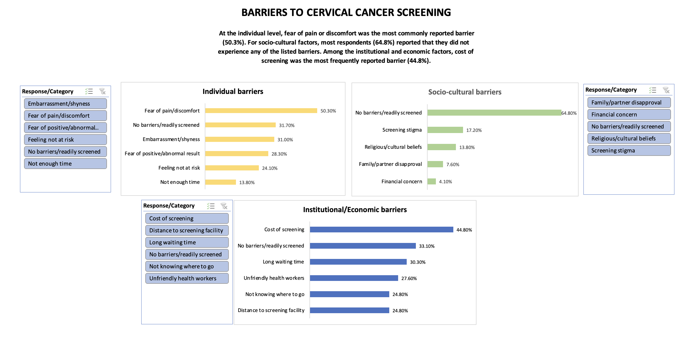
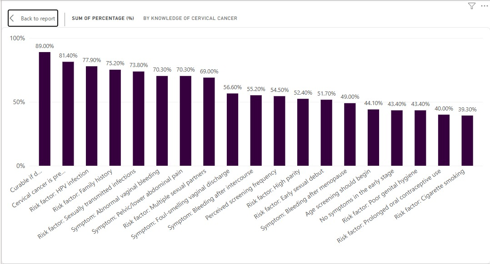
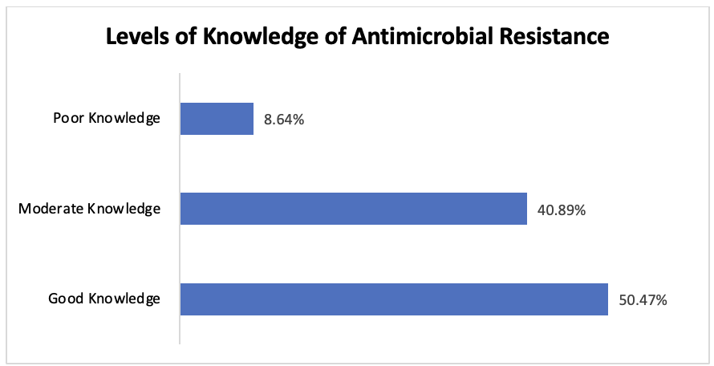
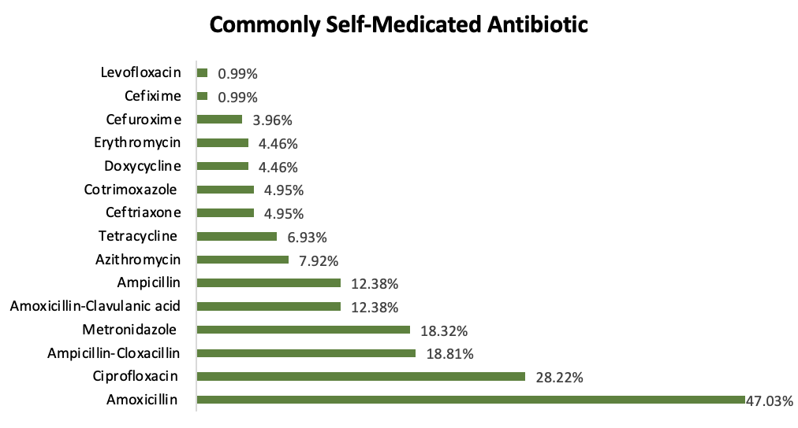
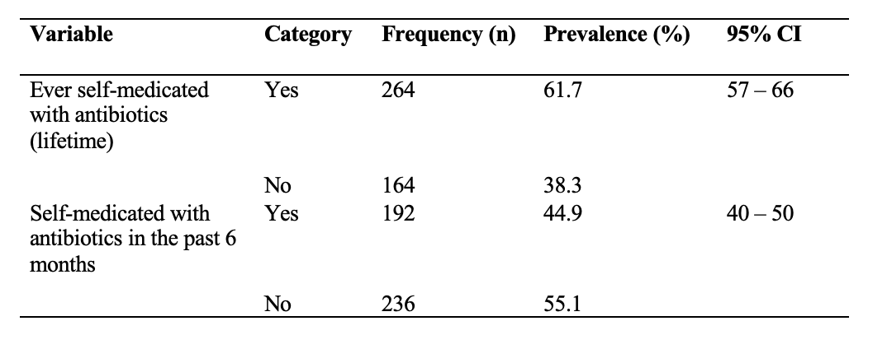
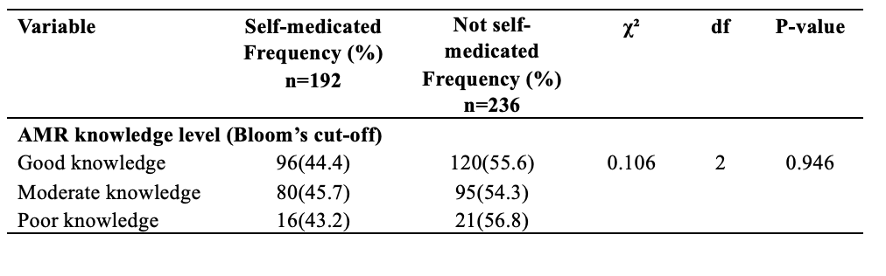
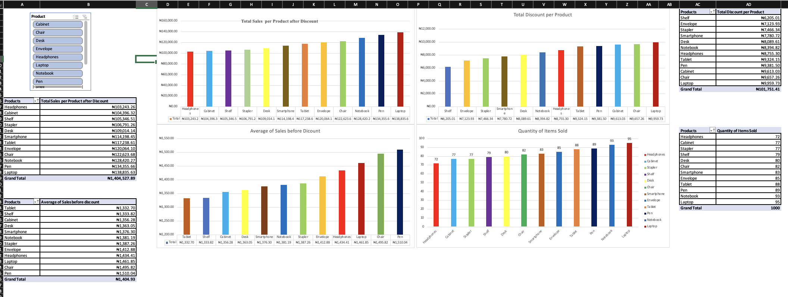

The study used an online questionnaire administered to 145 respondents. The data were cleaned and analysed to describe participant characteristics, sources of information, screening uptake, and reported barriers to screening. Microsoft Excel was used to clean and analyze the data.


Microsoft Power BI Data visualisation of cervical cancer knowledge.

Fourteen questions assessed respondents' knowledge of antimicrobial resistance (AMR). Responses were scored and classified into good, moderate, and poor knowledge categories using Bloom's cut-off criteria. Microsoft Excel was used to score, categorise, and visualise the data. The findings showed that 50.47% of respondents had good knowledge, 40.89% had moderate knowledge, while 8.64% had poor knowledge of antimicrobial resistance

Microsoft Excel was used for data cleaning, frequency distribution, and percentage calculations to identify the commonly self-medicated antibiotics among respondents. The findings were presented using a horizontal bar chart. Amoxicillin was the most commonly reported antibiotic (47.03%), followed by ciprofloxacin (28.22%) and ampicillin-cloxacillin (18.81%). Levofloxacin and cefixime were the least reported, at 0.99% each.

Statistical analysis was conducted using IBM SPSS Statistics to determine the prevalence of antibiotic self-medication among young adults. Frequencies, percentages, and 95% confidence intervals were calculated to describe lifetime and six-month prevalence. The findings showed that 61.7% of respondents had self-medicated with antibiotics at some point in their lives, while 44.9% reported antibiotic self-medication within the preceding six months.

A chi-square test of association was conducted using SPSS to examine the relationship between respondents' AMR knowledge levels and antibiotic self-medication within the preceding six months. The analysis revealed no statistically significant association between AMR knowledge level and antibiotic self-medication (χ² = 0.106, df = 2, p = 0.946). This suggests that differences in AMR knowledge levels were not significantly associated with antibiotic self-medication behaviour in the study population.
A data visualization project using Microsoft Power BI to show the revenue trends of an online retail store over time.

A data visualization project using Microsoft Excel to show the sales trends of products over time.